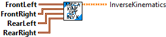
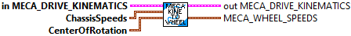
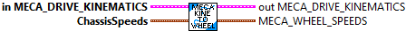

Constructs a MecanumDriveKinematics data structure.
Helper class that converts a chassis velocity (dx, dy, and dtheta components) into individual wheel speeds.
The inverse kinematics (converting from a desired chassis velocity to individual wheel speeds) uses the relative locations of the wheels with respect to the center of rotation. The center of rotation for inverse kinematics is also variable. This means that you can set your set your center of rotation in a corner of the robot to perform special evasion manuevers.
Forward kinematics (converting an array of wheel speeds into the overall chassis motion) is performs the exact opposite of what inverse kinematics does. Since this is an overdetermined system (more equations than variables), we use a least-squares approximation.
The inverse kinematics: [wheelSpeeds] = [wheelLocations][chassisSpeeds] We take the Moore-Penrose pseudoinverse of [wheelLocations] and then multiply by [wheelSpeeds] to get our chassis speeds.
Forward kinematics is also used for odometry -- determining the position of the robot on the field using encoders and a gyro.
Parameters:
- Left Front - The location of the front-left wheel relative to the physical center of the robot. (Translation)
- Right Front - The location of the front-right wheel relative to the physical center of the robot. (Translation)
- Left Rear - The location of the rear-left wheel relative to the physical center of the robot. (Translation)
- Right Rear - The location of the rear-right wheel relative to the physical center of the robot. (Translation)
Returns:
- Meca_Drive_Kinematics - Data structure

Construct inverse kinematics matrix from wheel locations.
Parameters:
- FrontLeft - The location of the front-left wheel relative to the physical center of the robot.
- FrontRight - The location of the front-right wheel relative to the physical center of the robot.
- RearLeft - The location of the rear-left wheel relative to the physical center of the robot.
- RearRight - The location of the rear-right wheel relative to the physical center of the robot.
Returns:
- InverseKinematics - Return matix

Performs forward kinematics to return the resulting chassis state from the given wheel speeds. This method is often used for odometry -- determining the robot's position on the field using data from the real-world speed of each wheel on the robot.
Parametetrs:
- MecaDriveKinematics - Data structure
- WheelSpeeds - The current mecanum drive wheel speeds.
Returns:
- ChassisSpeeds - The resulting chassis speed.

Performs forward kinematics to return the resulting Twist2d from the given wheel deltas. This method is often used for odometry -- determining the robot's position on the field using changes in the distance driven by each wheel on the robot.
* @param
* @return The resulting Twist2d.
Parametetrs:
- MecaDriveKinematics -- Data structure
- wheelDeltas -- The distances driven by each wheel.
Returns:
- Twist2d - The resulting twist.

Performs inverse kinematics to return the wheel speeds from a desired chassis velocity. This method is often used to convert joystick values into wheel speeds.
This function also supports variable centers of rotation. During normal operations, the center of rotation is usually the same as the physical center of the robot; therefore, the argument is defaulted to that use case. However, if you wish to change the center of rotation for evasive manuevers, vision alignment, or for any other use case, you can do so.
Parameters:
- MecaDriveKinematics - Data structure
- chassisSpeeds - The desired chassis speed.
- centerOfRotation - The center of rotation. For example, if you set the center of rotation at one corner of the robot and provide a chassis speed that only has a dtheta component, the robot will rotate around that corner. (Meters)
Returns:
- MecaDriveKinematics - Updated data structure
- WheelSpeeds - The wheel speeds. Use caution because they are not normalized. Sometimes, a user input may cause one of the wheel speeds to go above the attainable max velocity. Use the MecaWheel_normalize function to rectify this issue.

Performs inverse kinematics to return the wheel speeds from a desired chassis velocity. This method is often used to convert joystick values into wheel speeds.
During normal operations, the center of rotation is usually the same as the physical center of the robot. This subVI, uses the physical center of the robot. Use MecaKinematics_ToWheelSpeeds to use a different center of rotation.
Parameters:
- MecaDriveKinematics - Data structure
- chassisSpeeds - The desired chassis speed.
Returns:
- MecaDriveKinematics - Updated data structure
- WheelSpeeds - The wheel speeds. Use caution because they are not normalized. Sometimes, a user input may cause one of the wheel speeds to go above the attainable max velocity. Use the MecaWheel_normalize function to rectify this issue.